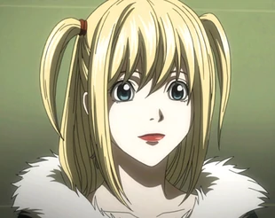

Faqja kryesore

Misa
|  | ||||
|---|---|---|---|---|
| Statusi | Mosha | Debutimi | ||
| "Po, por ... për mua, Light është më i rëndësishm se bota." |
e vdekur | 19 (fillimi) 24 (pas kalimit të kohës) | Episodi i njëmbëdhjetë | |
| Misa Amane (弥 海砂, Amane Misa) është një model dhe mbështetës i Kira-s i cili në fund bëhet Kira e Dytë. Pasi fitoi një Shënim të Vdekjes, ajo kërkon Kira në mënyrë që ta falënderojë atë për vrasjen e burrit që vrau familjen e saj dhe t'i ofrojë ndihmën e saj. Pasi bëri tregti për Shinigami Eyes, Misa mëson se identiteti i Kira është Light Yagami. Pas një takimi me Light, ajo vendos që t'ia kushtojë jetën e saj ndihmës së Lightës, sido që të mundet, dhe bëhet e vendosur të përdorë sytë e saj për të zbuluar emrin e vërtetë të L. | ||||
Autori i faqes: Rei Hysenji
reihysenji@hotmail.com
© E drejta e autorit @ publikuesit e Death Note:
Shueisha
Viz Media
Konami Sports Club Co., Ltd.